Galería del Día de Muertos
 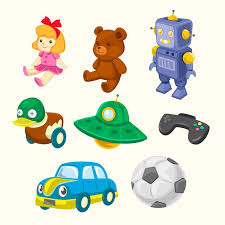
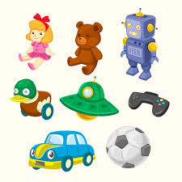
 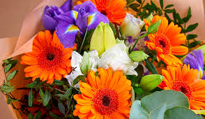
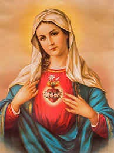
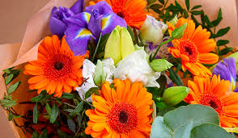
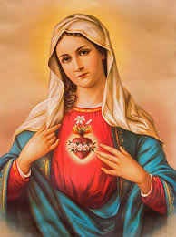

 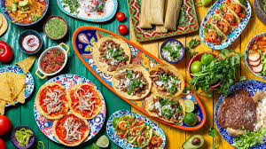
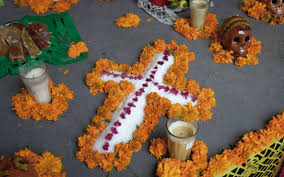
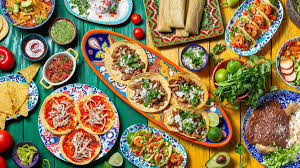
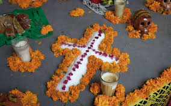
Una celebración mexicana que honra a los seres queridos que ya no están con nosotros. Dependiendo de enque region de mexico estes dependeran las costumbres, si quieres saber mas de nuestro dia festivo sigue leyendo esta pagina
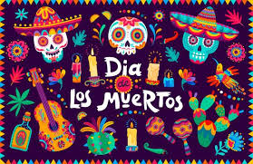Explora nuestra selección de decoración para el Día de Muertos:
Aqui puedes ver decoracion por Amazon
AmazonAqui puedes ver decoracion por Mercado Libre
Mercado libreEl Día de Muertos es una tradición que se celebra el 1 y 2 de noviembre, donde se honra a los difuntos con altares, flores de cempasúchil, comida, y música. El altar de muertos tiene 2 niveles minimo a 7 niveles maximo y estos contienen El camino de flores, Los juguetes, Un plato con sal, Las flores, imagen de un santo de cuál sea usted devoto, vaso de agua, sal, pan de muertos, comida y la fruta que solía ser la favorita del difunto, foto del difunto, una cruz que puede ser formada por semillas, frutas, sal, cenizas o flores de cempasúchil, Copal, incienso, Veladora, Calaveras, Arco, Papel picado y Flores de cempasúchil.
Más información
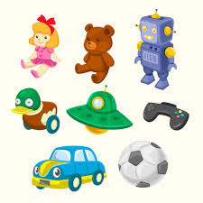
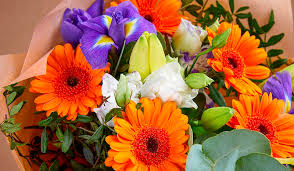
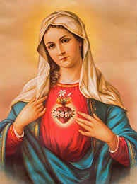
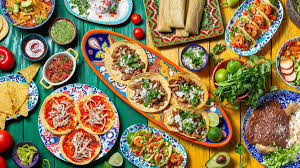
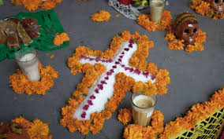